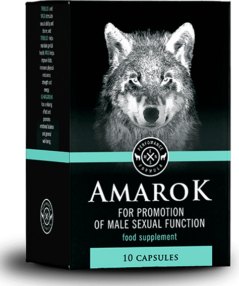

29.01.2020
Erecție puternică 2: revenirea activității sexuale
Un pic despre mine
Bună tuturor! Sunt Marc, am 43 de ani și îmi place sexul. Îl ador atât de mult încât soția mea și-a tras-o în toate locurile posibile: lift, vestiar, plaja, avion, cinema, acoperișul clădirilor înalte, hotel și așa mai departe. Din fericire, acum adăugăm o listă de locuri neobișnuite, deși cu doar șase luni în urmă aproape că am devenit impotent.
Cum a început totul
Primul eșec s-a întâmplat când am băut prea mult. Dar nu am reacționat că asta a fost o problemă, doar ne-am râs și ne-am culcat. A doua zi, aceeași poveste, deși am fost treaz. Am crezut că ar putea fi orice, dar nu impotență.
Abținerea de câteva zile, cu siguranță trebuia să ajute, vine o seară mult așteptată de sex animal pasionat și ... eșec din nou, penisul nici măcar nu s-a mișcat.

Creierul a negat ceea ce se întâmplă și a căutat scuze, în orice caz, la această vârstă, nu sunt singurul care s-a confruntat cu această problemă. I-am întrebat pe toți prietenii ce-i cu viața lor de dragoste. Am crezut că nimeni nu-mi va spune despre relațiile sale intime, pentru că nu suntem tineri... Dar la naiba, am auzit astfel de povești. Pe scurt: anul are o soție și mai multe amante, altul sâmbăta face sex în grup, al treilea a încercat să intre în industria pornografică, dar soția l-a descurajat, celălaltul a sărbătorit aniversarea de cincizeci de ani cu șase prostituate și a adăugat că ar fi rezistat și 10.
Am ascultat atunci și m-am gândit că este cel mai probabil un eșec temporar și apoi totul va fi bine. Dar toate încercările de a face sex s-au încheiat fără succes.
Soția a râs de mine, a strigat că căpitanul meu ar trebui să demisioneze. Apoi seara a adus Viagra și a spus că mulți pensionari beau acest rahat și eu trebuie să beau. Am fost supărat atât de tare și am băut o pastilă ca să-i fac în ciudă.
A funcționat. Doar penisul s-a ridicat pe jumătate. Am intrat cumva, m-am enervat, n-am putut să ejaculez. Nu am putut, pentru că am avut o durere de cap sălbatică, m-au ameţit și mi s-a făcut greață. Din acel moment, am decis că nu voi mai lua chimie asta.
Am cerut sfatul

Țineți minte, am vorbit despre un bărbat care a chemat șase prostituate la aniversare? Deci, am decis să-l întreb cum totul funcționează încă. El a râs, a întrebat dacă am probleme cu asta. Am refuzat, am spus, că am doar interesul. El e așa: Haide. Știi, nu e nimic cu asta, am trecut prin asta deja. Am alergat prin farmacii, am vizitat toate forumurile și am găsit o chestie care m-a ajutat.
A fost ciudat să-l întreb direct, ca să nu creadă ceva, dar el a continuat să povestească totul:
Se numește , poate ai auzit despre asta. Dacă totul este rău, bei câte o capsulă zi și seara. În câteva zile, o să înnebunești de efectul. Dacă te gândești să-l cumperi, te avertizez imediat: asigură-te că bei cursul pentru ca efectul să fie permanent.
După acest curs, vei uita ce este impotența. Mă cunoști de mult timp, nu voi lua nici un rahat. Așa că acționează până când trenul să plece.”
El mi-a dat un link, unde pot lua același , astfel încât să nu fiu înșelat cu livrare și să nu-mi trimită un rahat. Acolo și am cumpărat mai multe ambalaje deodată.
Am început să beau , așa cum mi-a spus un prieten - o capsulă dimineața, o capsulă seara, pentru că lucrurile mi-au fost destul de nasoale.
Soția a glumit tot timpul cu cine se va culca acum, despre amanți a început să povestească și a întrebat cum mă simt despre asta. Nu știa ce se va întâmpla.
Primul efect
După câteva zile dimineața, am simțit o erecție bună. Cred că o să-i arăt cine e amantul. În aceeași seară, totul a fost aranjat, se presupune că vreau să încerc din nou, poate de data aceasta se va ridica.
Ea nici măcar nu a început să se dezbrace, spune, care e sensul de a irosi timpul. E o șmecheră, nu-i nimic. În primele secunde ale preludiilor, penisul s-a ridicat astfel încât nu numai ea, ci și eu am fost șocați. Fără a pune întrebări inutile, ea a dezbrăcat toate hainele.
Ne-am culcat timp de aproximativ 5 ore. Ea a strigat atât de tare încât mi-au țiuit urechile înfiorător. După sex, ea a întrebat ce o poantă era. Ea a recunoscut că înainte, deși ne-am futut de multe ori, dar calitatea sexului a lăsat de dorit. A avut orgasm foarte rar. Și acum, pentru o singură sesiune, așa cum a spus ea, a avut șase orgasme.
Sexul acela a fost punctul de plecare. După el, ne tragem în fiecare zi, relațiile noastre au devenit perfecte. Nu ne certăm, rezolvăm toate problemele în pat.
Toată această fericire a fost datorită cursului de . Cui îi pasă, voi lăsa link-ul. Surprindeți-vă soțiile și amantele.
Toată lumea știe de mult că, dacă există probleme cu potența, atunci Viagra nu trebuie de băut în nici un caz. Dacă penisul se ridică, nu va dura mult. Există riscul de a rămâne impotent pentru tot restul vieții, nici un doctor nu va ajuta
Susțin, odată a trebuit să beau o pastilă a acestui rahat, în cele din urmă a încetat să se mai ridice deloc. Am consultat orice doctorii, doar a salvat. Mi-a sfătuit un medic, a spus el însuși a băut un curs pentru sănătate
Remediul este cu siguranță cel mai bun dintre toți cei care sunt pe piață. Nu am avut probleme speciale cu erecția, am avut doar câteva erecții pentru seară. După curs, nu există o astfel de problemă, pot să ejaculez de cel puțin 10 ori, doar epuizez foarte mult.
Am 54 de ani. M-am confruntat cu o erecție proastă cu aproximativ un an în urmă. Am mers la urolog timp de aproape două luni, apoi la androlog. Erecția a apărut, dar foarte slabă. S-a ridicat, cum se spune, pe o jumătate. Spuneți-mi, în cazul meu mă va ajuta?
Fără îndoială, funcționează la fel pentru toată lumea. conține numai extracte naturale care au un efect pozitiv asupra întregului corp masculin. Crește libidoul, producția de testosteron și așa mai departe. Acest lucru ar trebui să fie comandat de toată lumea
Mulțumesc, atunci fac comanda
Acum două săptămâni, soțului meu i-am cumpărat acest remediu, am spus să bea fără întrebări inutile. El este ascultător la mine, a băut capsulele fără probleme. Nu i-a plăcut prea mult sexul, până când a început să bea )))
De asemenea, am întâlnit o potență proastă, am fost îngrijorat că aceasta este sfârșitul relației mele sexuale. Când am decis să povestesc prietenului meu despre problema mea, el m-a susținut, a spus că acum problemele cu potență nu sunt o problemă. În general, el mi-a sfătuit să beau cursul de .
Am 51 de ani, deja șase luni au trecut după administrarea cursului de . Erecția este normală. Recomand tuturor acest remediu
Bună, băieți. Acum trei luni, am renunțat la relații intime, m-am confruntat cu impotență. Medicii specialiști, dacă pot fi numiți așa, nu știau ce să facă, pe scurt, nu au putut ajuta. Am încercat tot felul de pastile pentru potență, dar după acest rahat devine mai rău. Cum credeți, nu e prea târziu să beau ?
Nu este niciodată prea târziu. Dacă ai avea 60 de ani, te va ajuta. Am 43 de ani. Șase luni am căutat un remediu, aproximativ ceva similar cu . Când am dat peste el, nu am ezitat să-l comand. Am băut un curs, într-un plan intim, toate problemele au dispărut
Bună ziua! Vreau să fac soțul meu să bea cel puțin o săptămână, spun cu nonşalanţă că nu sunt satisfăcută de sex deloc! El nu vrea. Fie caută pe altcineva, fie bucură-te de ceea ce este. CE SĂ FAC??
Pune-l în fața alegerii, oricum. Găsește un amant. Nu știu de ce trebuie să renunțe la remediu care nu dăunează, ci aduce beneficii.
Nici eu nu-l înțeleg. Am mai mulți prieteni care beau , spun că este o chestie minunată.
Un prieten mi-a adus cumva , am crezut că glumește, nu aveam probleme cu potența. Am citit despre remediul, s-a dovedit a fi complet natural. Am început să-l iau și am înnebunit. După câteva săptămâni, am avut o astfel de erecție, se pare că am adăugat câțiva centimetri.